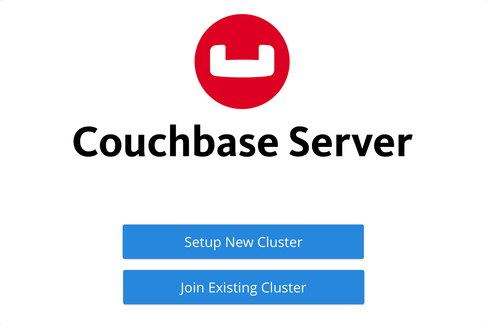
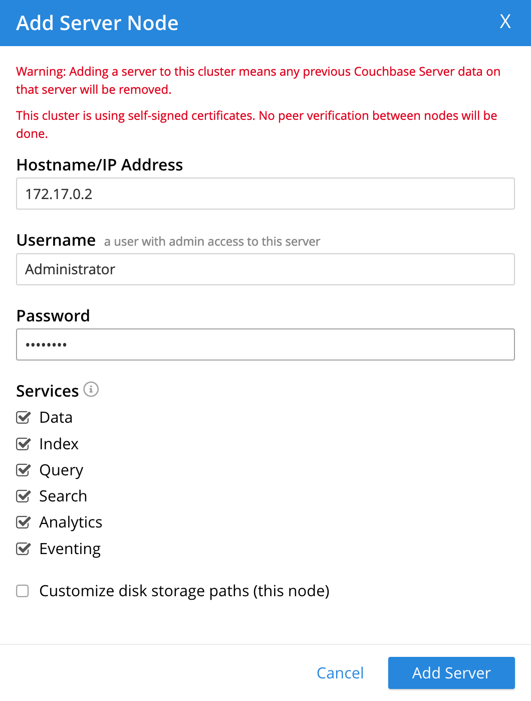
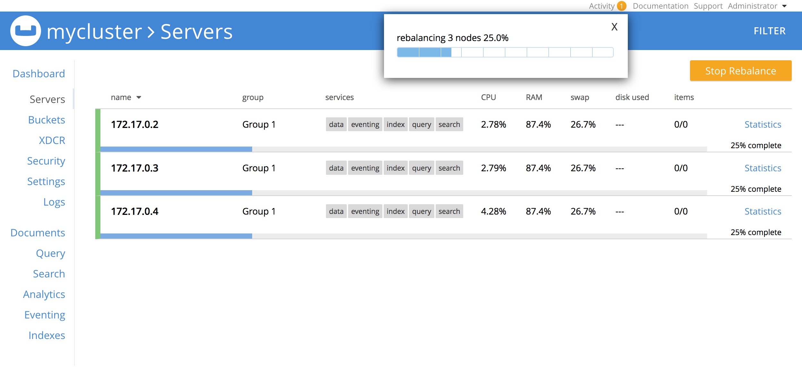

Install Couchbase Server Using Docker
Couchbase Server can be installed using official Couchbase images from Docker Hub.
If you’re trying Couchbase Server for the first time and just want to explore a Couchbase configuration, the quickest way to install a pre-configured single-node deployment using Docker is to follow the Get Started tutorial.
For more traditional Docker deployments, use the following sections below:
If you’re simply looking for the official Couchbase Server Docker image, you can find it on Docker Hub.
Deploy a Single-Node Cluster with Containers
To run a single-node cluster, you will need to deploy a single container representing the single Couchbase Server node.
|
For detailed information about deploying Couchbase Server, make sure to review the Couchbase Server system requirements and deployment guidelines, paying particular attention to the following pages: |
-
Download and install Docker on the host computer.
To set up Docker on the host computer, refer to Docker’s installation instructions.
-
Install the official Couchbase Server container image.
$ docker run -d --name db -p 8091-8096:8091-8096 -p 11210-11211:11210-11211 couchbaseAfter running the above command, a single instance (
db) of the latest official Couchbase Server container image is downloaded and installed onto the host computer. If a traditional installation of Couchbase Server is running locally on the host computer, the port mappings specified using the-poption may fail. Ensure that you stop any local instance of Couchbase Server before running this command.You can check the Docker logs to verify that the container has started.
$ docker logs dbIf the container has started, the output should start with the following:
Starting Couchbase Server -- Web UI available at http://<ip>:8091 ... -
From a web browser, go to
http://localhost:8091to access the Couchbase Web Console.If the container is up and running, you should see the Couchbase Server setup screen:
 -
Click Setup New Cluster and proceed through the setup wizard to create a cluster of one node.
Refer to Create a Cluster for instructions on using the setup wizard. You may need to lower the RAM allocation for various services to fit within the bounds of the container’s resources.
Now that you have a single-node Couchbase cluster running in containers, you can move on to Next Steps.
Deploy a Multi-Node Cluster with Containers
There are two popular topologies for multi-node container deployments of Couchbase Server:
- All Containers on One Host
-
This model is commonly used for scale-minimized deployments that simulate production deployments for development and testing purposes.
- Each Container on Its Own Host
-
This model is commonly used for production deployments.
|
For detailed information about deploying Couchbase Server, make sure to review the Couchbase Server system requirements and deployment guidelines, paying particular attention to Deployment Considerations for Virtual Machines and Containers. |
All Containers on One Host
In this cluster deployment model, all node containers are placed on the same physical host computer. When all containers run on a single physical host, it’s important to remember that all containers will compete for the same resources. For this reason, it’s not recommended to use this deployment model for use with applications that are sensitive to performance.
The following procedure explains how to set up a three-node Couchbase cluster with all of the containers running on one physical host.
-
Download and install Docker on the host computer.
To set up Docker on the host computer, refer to Docker’s installation instructions.
-
Install three instances of the official Couchbase Server container image.
Make sure to run each of the following commands:
$ docker run -d --name db1 couchbase$ docker run -d --name db2 couchbase$ docker run -d --name db3 -p 8091-8096:8091-8096 -p 11210-11211:11210-11211 couchbaseAfter running the above commands, three instances (
db1,db2,db3) of the latest official Couchbase Server container image are downloaded and installed onto the host computer. If a traditional installation of Couchbase Server is running locally on the host computer, the port mappings specified using the-poption may fail. Ensure that you stop any local instance of Couchbase Server before running these commands.If you are using encrypted communication for the Couchbase Web Console, client, and server, and using XDCR, you need to open up additional ports. For details, refer to Couchbase Server Ports. You can check the Docker logs to verify that each container has started:
$ docker logs db1If the container has started, the output should start with the following:
Starting Couchbase Server -- Web UI available at http://<ip>:8091 ... -
Discover the local IP addresses of
db1anddb2.$ docker inspect --format '{{ .NetworkSettings.IPAddress }}' db1$ docker inspect --format '{{ .NetworkSettings.IPAddress }}' db2If the above commands return an empty result, then run the following commands to discover the local IP addresses:
$ docker inspect -f '{{range .NetworkSettings.Networks}}{{.IPAddress}}{{end}}' db1$ docker inspect -f '{{range .NetworkSettings.Networks}}{{.IPAddress}}{{end}}' db2You’ll need these IP addresses later to add
db1anddb2into the cluster. (The initial cluster setup will be run fromdb3, so there is no need for its IP address.) -
From a web browser, go to
http://localhost:8091to access the Couchbase Web Console.If
db3is up and running, you should see the Couchbase Server setup screen: -
Click Setup New Cluster and proceed through the setup wizard as normal.
Refer to Create a Cluster for instructions on using the setup wizard. You may need to lower the RAM allocation for various services to fit within the bounds of the container’s resources.
-
After the cluster is initialized on the first Couchbase Server node (
db3), the next step is to add the Couchbase Server nodes fromdb1anddb2to the cluster.-
In the Couchbase Web Console, go to the Servers tab and click ADD SERVER. This opens the Add Server Node dialog.
In the Hostname/IP Address field, enter the IP address that you previously captured for
db1. Click Add Server to add the node to the cluster configuration. -
After
db1is successfully added to the cluster configuration, repeat the previous step using the IP address that you captured fordb2. -
Once
db1anddb2have successfully been added to the cluster configuration, click Rebalance to make the new nodes active in the cluster.
-
Now that you have a multi-node Couchbase cluster running in containers on a single host, you can move on to Next Steps.
Each Container on Its Own Host
In this cluster deployment model, each node container is placed on its own physical host computer. This is the supported model for Couchbase Server container deployments in production.
The following procedure explains how to set up a three-node Couchbase cluster with each container running on its own physical host. Note that all physical hosts must be able to discover one another on the same network and be able to communicate over the required ports.
-
Download and install Docker on each host computer.
To set up Docker on each host computer, refer to Docker’s installation instructions.
-
On each of the three physical hosts, install the official Couchbase Server container image.
$ docker run -d --name db -v ~/couchbase:/opt/couchbase/var --net=host couchbaseAfter running the above command, a single instance (
db) of the latest official Couchbase Server container image is downloaded and installed onto the host computer. The-voption is recommended for better I/O performance and persists the data stored by Couchbase on the local host. The--net=hostoption provides better network performance and maps the host network stack to the container.You can check the Docker logs to verify that the container has started.
$ docker logs dbIf the container has started, the output should start with the following:
Starting Couchbase Server -- Web UI available at http://<ip>:8091 ... -
On each physical host, discover the local IP address for the Couchbase Server container.
docker inspect --format '{{ .NetworkSettings.IPAddress }}' dbYou’ll need these IP addresses later to add each node into the cluster.
-
On one of the physical hosts, open a web browser and go to
http://localhost:8091orhttp://<node-ip>:8091to access the Couchbase Web Console.If the Couchbase Server container is up and running, you should see the Couchbase Server setup screen:
-
Click Setup New Cluster and proceed through the setup wizard as normal.
Refer to Create a Cluster for instructions on using the setup wizard.
-
After the cluster is initialized on the first host, the next step is to incorporate the other Couchbase Server nodes running on the other hosts.
-
In the Couchbase Web Console on the host you just initialized, go to the Servers tab and click ADD SERVER. This opens the Add Server Node dialog.
In the Hostname/IP Address field, enter the IP address of one of the other nodes that you captured previously. Click Add Server to add the node to the cluster configuration.
-
Once the second node has been successfully added to the cluster configuration, repeat the previous step using the IP address of the third and final node.
-
Once all three nodes have been successfully added to the cluster configuration, click Rebalance to make the new nodes active in the cluster.
-
Now that you have a multi-node Couchbase cluster running in containers across multiple physical hosts, you can move on to Next Steps.
Next Steps
Once you’ve successfully initialized a Couchbase cluster running in containers, you can start installing and querying sample buckets, as well as begin connecting clients.
-
If you would like to practice querying on a new Couchbase cluster, log into the Couchbase Web Console at
http://localhost:8091and go to the Query tab. If you don’t have any buckets set up yet, you can go to the Buckets tab and click sample bucket to load some sample data. -
Connect via SDK
The SDKs communicate with Couchbase Server services over various ports using the name that is used to register each node in the Servers tab. Given that each node is registered using the IP address of the hosts, applications using the SDK can be run from any host that can reach the nodes of the cluster.
For single-node clusters, simply run your application through the Couchbase Server SDK on the host and point it to
http://localhost:8091/poolsto connect to the container.For more information about deploying a sample application, refer to the SDK documentation.